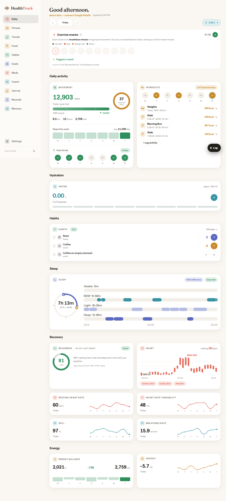
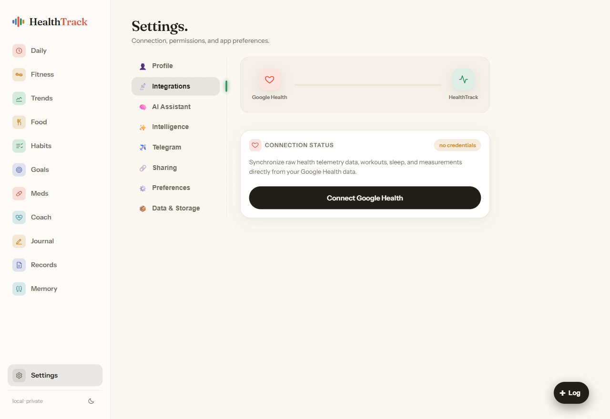

Welcome to HealthTrack
Your body, beautifully measured. This short guide walks you through what each part of the app does and how to get the most from it — your dashboard, logging, your AI coach, trends, and a few settings worth knowing.
Your dashboard — the Daily screen
The Daily screen is home. It pulls together everything from today in one calm view: your movement, workouts, hydration, habits, sleep, and recovery — each with a plain-English read on how you're doing. Scroll down for the full day; the cards group naturally so each insight sits next to the data behind it.

A few things to notice:
- Movement steps, active minutes and calories against your daily goals.
- Recovery a readiness score (0–100) that blends your heart-rate variability, resting heart rate and sleep versus your own recent baseline.
- Sleep a stage-by-stage view of last night.
- Exercise snacks at the top — small circles for short bursts of brisk movement through the day; tap one when you've done a minute.
Logging anything — three easy ways
You rarely have to fill in a form. There are three ways to record what you eat, drink, or do:
1 · The Food screen
Snap a photo of a meal, scan a barcode, search a food, or just describe it — HealthTrack estimates the calories and macros and logs it for you.

2 · The "+ Log" button
The + Log button (bottom-right on every screen) is a quick menu for activity, hydration, weight, blood pressure, glucose and more — tap, type a number, done.
3 · Just tell your coach
Type "logged a 30-minute walk" or "2 glasses of water" to your coach and it records it — the same as if you'd filled in a form. More on that next.
Your AI coach
The Coach is the heart of HealthTrack. Ask it anything about your health and it answers using your numbers — trends, sleep, workouts, labs, medications. It can also log things for you, and its advice is grounded in published guidance, kept conservative, and always defers medical decisions to your clinician.

Try things like "How is my weight trending?", "Is my resting heart rate creeping up?", or "What should I eat after this workout?" You can also talk to it — tap the microphone — and it remembers useful context about you between conversations.
Trends — the bigger picture
The Trends screen zooms out to weeks and months: steps, weight, resting heart rate, sleep, HRV and more, each as a clean chart with your goal lines overlaid. Switch between week, month, and longer ranges to see where things are heading — and get a short written summary of the current week or month on request.

Goals, habits & medications
Three more places worth a visit from the sidebar:
- Goals — set targets that matter to you (weight, steps, resting heart rate, key lab numbers). They show up on Daily and Trends and your coach treats them as the bar to hit.
- Habits — build your own "do more" or "do less" habits (read 10 minutes, limit coffee), with streaks and progress.
- Meds — track medications and supplements with reminders and adherence; your coach factors them into timing advice (never dosing).
Settings — connect your data & pick your coach
Open Settings to set everything up. The two that matter most are under their own tabs:

- 1 Integrations → Connect Google Health. This brings in your steps, heart rate, sleep, workouts and measurements. A one-time sign-in.
- 2 AI Assistant → choose your coach's model. Connect a ChatGPT subscription with a one-time code, paste an API key for any provider, or use the bundled local model. A cloud model is recommended for the best coaching.
Other tabs let you set your profile, turn on Telegram reminders, manage what you share, and control background "intelligence" — all optional.
Install it on your phone & computer
HealthTrack installs like a normal app — no app store needed:
Phone: open your HealthTrack address in the browser. On Android (Chrome), tap the menu → Install app. On iPhone (Safari), tap Share → Add to Home Screen.
Computer: open it in Chrome or Edge and click the install icon in the address bar.
It then opens full-screen with its own icon and stays signed in.